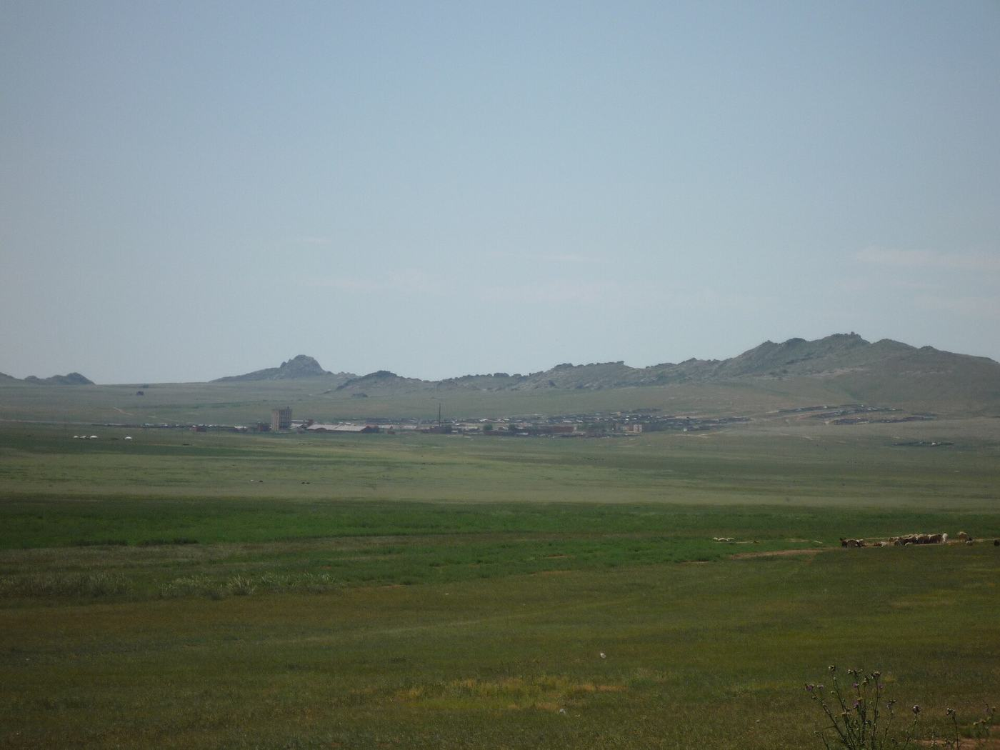
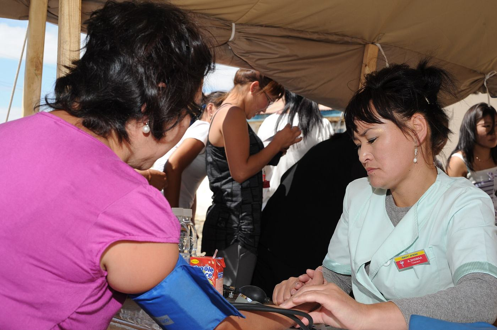

Холбоо барих
Хандивлах, сайн дураараа ажиллах, эсвэл хамтран ажиллах хүсэлтэй бол бидэнтэй холбогдоорой.

Хаяг
Төв аймаг, Зуунмод сум, 2-р баг, Ланс 11-15
Холбоо нь 2023 оноос хойш «Аз жаргалын өргөө» төвд үйл ажиллагааны байртай. Дэлгэрэнгүй
Санал хүсэлт илгээх
Санал хүсэлтээ и-мэйлээр илгээх бол доорх товчийг дарна уу. Танд тохирсон и-мэйл програм нээгдэж, захидлаа өөрөө илгээх боломжтой.
И-мэйл илгээхХүртээмж
Хэрэв та энэ вэбсайтаас хүртээмжийн саад тотгор олбол, эсвэл мэдээллийг өөр хэлбэрээр (том үсэг, хэвлэмэл, дуугаар) авах шаардлагатай бол бидэнд мэдэгдэнэ үү.

